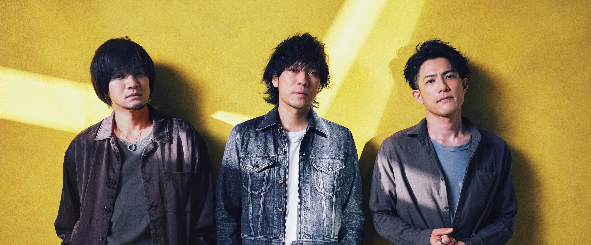

About Back Number
In 2004, the band was formed by Iyori Shimizu in Gunma prefecture. The band was named "back number" because of a girl who had dated Shimizu in high school, dated another bandman. To her, Shimizu is an ex-boyfriend, a "back number". He wanted to make a "cooler" band than that guy's band with a hope that the girl might come back to him. It took two years for the band to come to shape with other members (not the current members) in line. Then some disagreements were born and other members' work priorities got in the way. The person who was in charge of the bass at that time wanted to quit and then joined Kazuya Kojima, who is a childhood friend of Shimizu and is now the current bassist. With Kojima joining, the band's activities were continued but this time, it was the drummer who wanted to withdraw from the band. While looking for another drummer, Shimizu heard that the band of the guy who had taken his girlfriend had disbanded. Hisashi Kurihara, who was the drummer of that band and also went to the same high school as Kazuya, was recruited into back number and has been in charge of the drum since then. After that, the guitarist withdrew and the band was left with its current line-up till now.